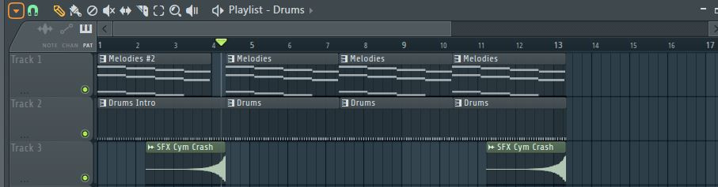

TAIGUE'S DIGITAL TECHNOLOGY SITE
Where I'll Be Putting Up Project Reports & What Not
What I planned for this project was to use FL Studio to create several music tracks. I achieved this to an extent. My finished product was 5 short beats that I was happy with and proud of.
1. Learn how to operate the software 2. Produce at least 3 beats by the end of the project 3. Have a full 3.30-minute track completed
1. I can now use FL Studio at an adept level 2. I made 5 short beats
I watched A guide initially to get an idea of how to use the software, I followed the first two parts of the series, before I was comfortable using FL on my own. Because FL comes with a limited supply of drums, instruments, etc, I had to download some to fit the style I was going for. I found I could make decent drum loops quite easily but the challenge was the melodies, I wasn’t making great ones, so I followed tutorials online to improve my ability, I spent a lot, probably the most time out of anything on this, learning how to make one on the piano, the best one I developed is used in the second track. On each song I tried to use new, different instruments so I was constantly looking for instruction on each one, most of the time I would end up in the same place; YouTube, following a tutorial from someone with a bad microphone. The process that I used for most of these was a simple one, I’d make 3 layers for the melody, the drums, & than anything else, once I got the basic loop id make an intro, usually just the melody accompanied by less drums, add effects to all the sections like reverb, EQ’s, etc & then done.
Overall, I’m satisfied with what I created & achieved. It was mostly a smooth ride, however, there were several difficulties during the process. I spent a lot of time trying to make a beat using a sample, but I had difficulty matching what I made with the clip to make them sound good together, no matter how many different ones I tried to use, it wouldn’t work out, eventually I gave up, this was my only entirely scrapped track. I haven’t made a full length beat yet, mostly because variation is hard, making a full beat would’ve taken a loot longer & been a lot lees impressive in the end. But moving onto the next project I am considering continuing with this. If I do, I'd like to focus on expanding my skill set, making full length tracks & giving them a more modern sound.